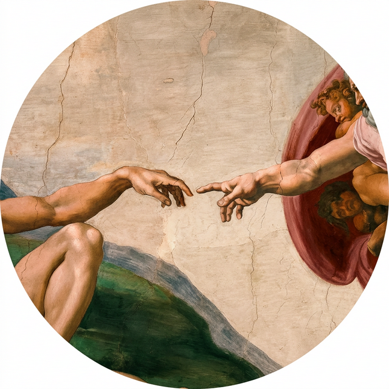
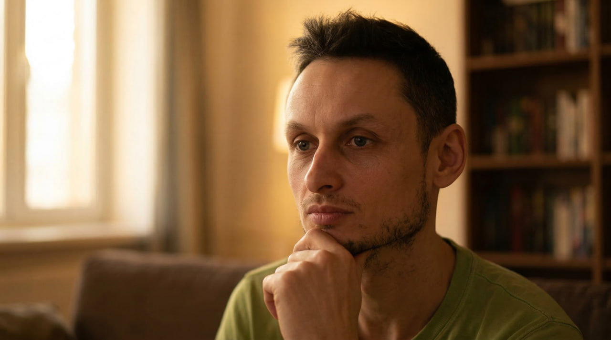

Когда отношения
причиняют боль
Найдём корень проблемы и выстроим здоровые отношения — за 4 индивидуальные сессии
Узнать больше
Найдём корень проблемы и выстроим здоровые отношения — за 4 индивидуальные сессии
4 персональные сессии один на один, где мы работаем именно с вашей ситуацией. Каждая встреча — 1,5 часа, онлайн, в удобное для вас время.
Отношения — это фундамент. Когда в них нет гармонии, это отражается на всех сферах жизни
Когда в отношениях хаос, мозг занят выживанием, а не ростом. Стресс блокирует ясное мышление, креативность и способность принимать финансовые решения. Исцеление отношений освобождает энергию для карьеры и дохода.
Нерешённые конфликты — это сильный стресс для нервной системы. Он влияет на иммунитет, психику, сон и физическое состояние. Когда отношения налаживаются, энергия течёт свободно, и нервная система восстанавливается.
Дети впитывают атмосферу и поведение, а не слова. Когда в семье постоянные ссоры, ребёнок растёт в страхе и тревоге. Здоровые отношения — лучшее, что можно дать своим детям.

Мы подсознательно оцениваем себя через призму отношений. Если партнёр обесценивает — мы начинаем верить, что недостаточно хороши. Когда отношения исцеляются, возвращается внутренняя опора и уверенность в себе.
Отношения — это базовая потребность. Пока она не закрыта, энергия уходит на борьбу, а не на творчество и самореализацию.
Настоящий внутренний покой невозможен, когда дома война. Радость подавляется чувством вины, обидой, тревогой. Когда отношения гармонизируются, покой приходит естественно — без борьбы и усилий.
Одни и те же скандалы повторяются по кругу. Те же слова, та же боль, то же бессилие
Кажется, что стараешься недостаточно. Или злишься, что стараешься только ты
Не знаешь, уйти или остаться. Боишься сделать шаг, а потом пожалеть
Разговоры, книги, советы друзей — всё это уже было. Ты понимаешь, что нужен другой подход
От первого шага до результата — простой и понятный путь
Знакомство и глубокий анализ ситуации. Находим паттерны, видим связь прошлого и настоящего. 55-75 минут.
Находим корень проблемы, освобождаемся от старых установок и деструктивных убеждений.
"Стало легче. Я вижу, откуда это всё идёт"Осознаёшь, почему у тебя возникали подобные ситуации. Получишь индивидуальные практические инструменты на каждый день.
"Я знаю, что делать, когда накрывает"Собираем всё воедино. Новый опыт становится частью тебя, а не набором техник.
"Я другой человек. Мои отношения меняются"Фиксируем изменения, проверяем, что новые модели поведения работают. Ты чувствуешь трансформацию.
"Это уже не вернётся. Я свободна"Выходят из кризиса в отношениях — и знают, почему он возник
Прекращают бесконечные ссоры — учатся разговаривать, а не обвинять
Отпускают обиды на родителей и партнёров — по-настоящему прощают
Освобождаются от чувства вины и деструктивных убеждений
Начинают быть собой, а не маской, которую от них ждут
Выстраивают здоровые отношения, основанные на уважении, а не на страхе
"После второй сессии я впервые за долгое время почувствовала, что мои отношения можно спасти. Александр помог увидеть то, что я не замечала годами."
"Я пришла с ощущением полного тупика. Через месяц работы с Александром — как будто сняли пелену с глаз. Ссоры прекратились, потому что изменилась я сама."
"Самое ценное — это когда Александр показал связь между моим детством и тем, что происходит в семье сейчас. Этот инсайт изменил всё."
"Я пришёл скептиком. Думал, что коучинг — это для тех, кто не может сам разобраться. Но Александр показал мне вещи, которые я бы сам никогда не увидел. Отношения с женой стали другими. Мы наконец-то слышим друг друга."

Практикующий коуч. 500+ проведённых сессий.
Мне самому пришлось пройти через развод и боль. Это стало отправной точкой, из которой родилось желание глубоко разобраться в природе отношений.
Я погрузился в коучинг, психологию, работу с подсознанием и глубокие медитативные техники. Проверял всё на себе — в собственной жизни, в своих отношениях, которые сейчас наполнены близостью, уважением и теплотой. Начал вести канал, ко мне стали приходить люди — и за 500+ сессий я увидел, что мои открытия работают не только для меня. Всё, что я изучил за эти годы, сложилось в единую систему — и этой системой я с радостью поделюсь с тобой на курсе "Исцеление Отношений".
Первый шаг — разговор. Без обязательств, без давления. Просто расскажи, что происходит.
Напиши мне в Телеграм или Max — и мы договоримся о времени.
Да. Работа идёт с тобой — с твоими реакциями, убеждениями, моделями поведения. Когда меняешься ты — неизбежно меняется динамика отношений. Партнёру не нужно участвовать.
Да, все мои сессии происходят онлайн, а результаты не отличаются от очных сессий. Единственное условие — спокойное место, где тебя никто не потревожит.
Я не обещаю мгновенных результатов — многое в работе зависит от самого клиента. Но я ценю честность: именно для этого существует бесплатная диагностика — чтобы мы оба поняли, подходим ли друг другу.
Первая диагностическая сессия — 50-65 минут. Сессии курса — 1,5-2 часа. Мы не торопимся: правильные решения рождаются из ясности, а не из спешки.
Ко мне обращаются и мужчины, и женщины. Чаще — женщины, но кризис в отношениях не зависит от пола. Если чувствуешь, что пора что-то менять — пиши.
Стоимость курса "Исцеление Отношений" (4 сессии) — 55 000 ₽. Доступна рассрочка от Т-Банка. Первый шаг — бесплатная диагностика, на которой мы обсудим все детали и поймём, подходим ли друг другу.
Напишите мне — и мы договоримся о времени диагностики